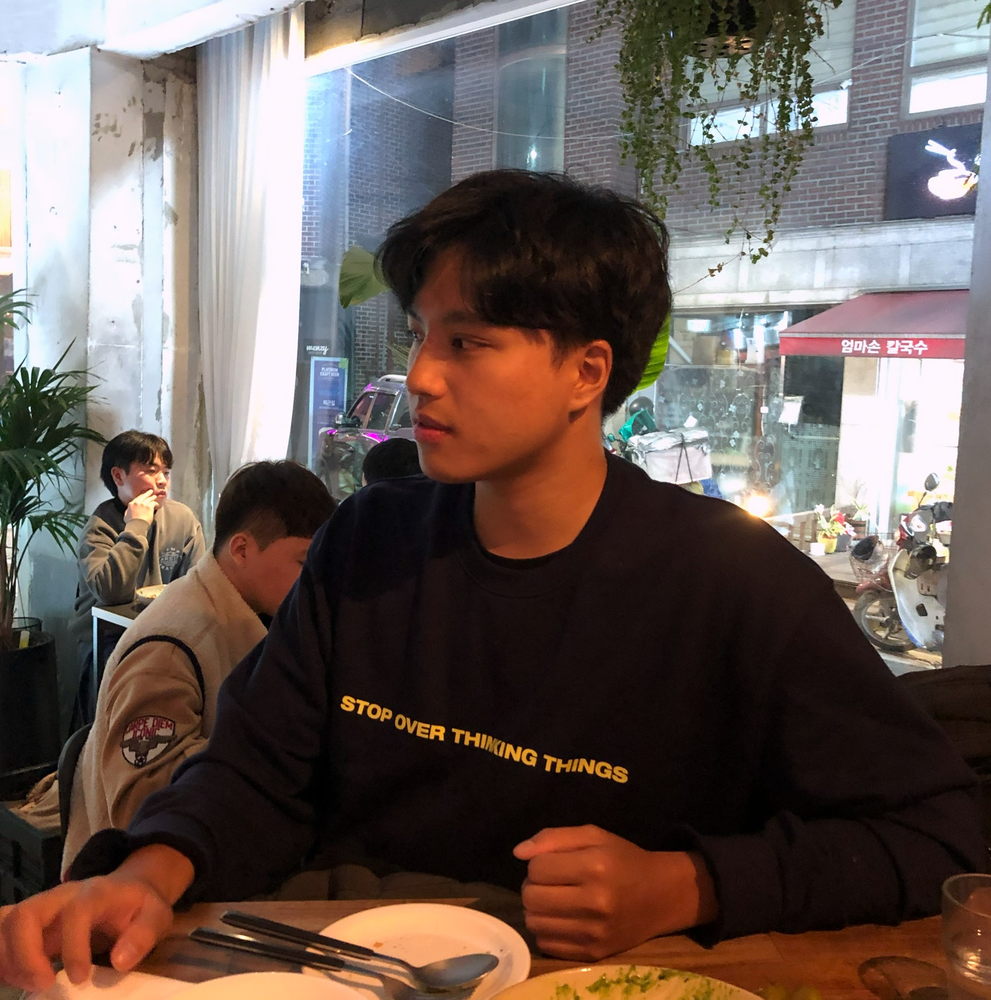
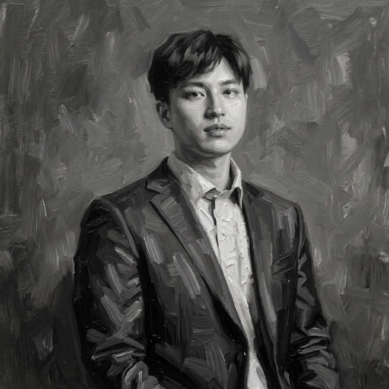
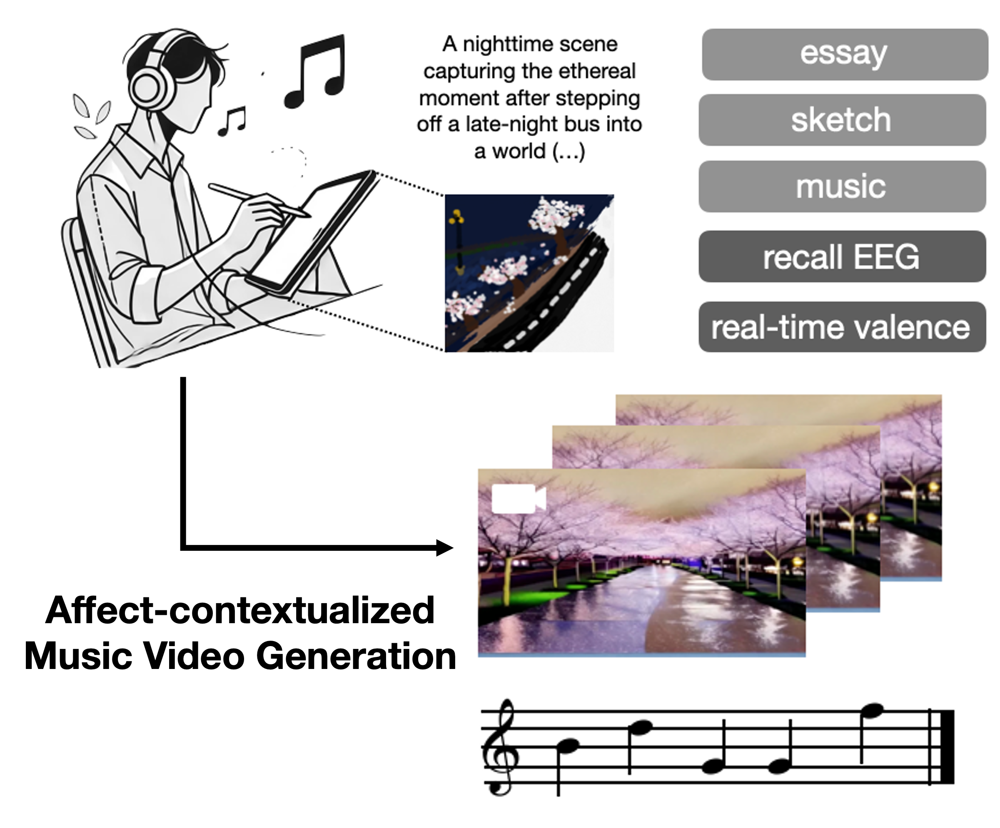
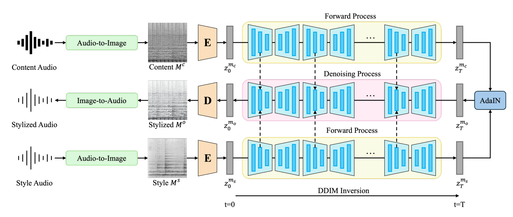

Joonwoo Kwon
PhD Student in Computer Science
· Generative Artist
Michigan State University
Michigan State University
I am a first-year PhD student in Computer Science at Michigan State University,
where I'm fortunate to be advised by Prof. Zijun Cui.
Prior to this, I earned my B.S. in Electronic and Electrical Engineering at SKKU
and my M.S. in Bioengineering at SNU,
where I was advised by Prof. Jiook Cha.
I also had the opportunity to collaborate with Prof. Shinjae Yoo
and Prof. Yuewei Lin at Brookhaven National Laboratory.
Research
My research lies at the intersection of computer vision, generative AI, and physics-informed learning. The core objective of my work is to embed physical laws into deep generative and vision models to achieve interpretable and physically coherent 3D motion representations.
- Physical Knowledge Representation — modeling physical principles within AI systems to enable grounded reasoning and interpretable real-world perception.
- Knowledge Integration — incorporating these representations into generative architectures for realistic 3D motion estimation and generation.
News
-
May 2026Our paper, Stylus, is accepted at IEEE ICIP 2026.
-
Apr 2026Invited as a reviewer for CVPR, ICIP, and NeurIPS.
-
Aug 2025Our paper, Revisiting Your Memory, is accepted as an Oral Paper at ACM Multimedia 2025 — CogMAEC Workshop.
-
Aug 2025Started my Ph.D. in MSU CS.
Publications


Revisiting Your Memory: Reconstruction of Affect-Contextualized Memory via EEG-guided Audiovisual Generation
ACM MM CogMAEC 2025
Oral
A multimodal framework for reconstructing video with music contextualized by human affect from brain signals.

Repurposing Image Diffusion Models for Training-Free Music Style Transfer on Mel-Spectrograms
IEEE ICIP 2026
A training-free framework that repurposes a pre-trained Stable Diffusion model for music style transfer in the mel-spectrogram domain.

Macro2Micro: Cross-modal Magnetic Resonance Imaging Synthesis Leveraging Multi-scale Brain Structures
arXiv 2024
An image-to-image translation model based on GAN for cross-modal MRI synthesis.
Manuscripts in Preparation

Compositional Brain Decoding from Symbolic Representations in the Hierarchical Visual System
A compositional brain decoding framework that maps fMRI signals to spatially grounded noun phrases by disentangling semantic and spatial pathways.

A Viscosity-guided Artistic Style Optimization via Brushstroke Parameterization
Viscosity-aware style optimization and brushstroke parameterization to emulate the physical and textural properties of oil painting and watercolor.